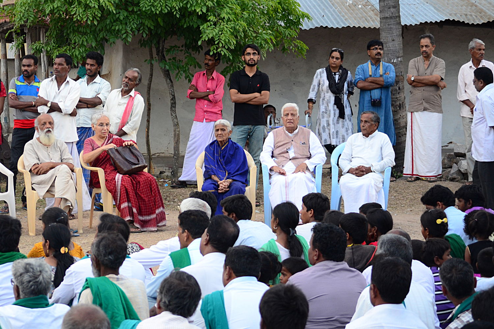

"The end may justify the means as long as there is something that justifies the end." - Leon Trotsky
The Handloom Satyagraha was expanded to include all organizations working towards sustainability into this campaign. Sustainability in agriculture, environment, labour, gender, language, folklore, culture and education, along with Khadhi and handlooms, is our motto. Badanawal Satyagraha has now become a joint campaign of all consumers and producers of a sustainable production range. It is a joint campaign of the city people and the village poor.
Badanawal is a small village situated at the southern end of Mysore district, adjoining Chamarajanagar, in Karnataka. It is a perpetually drought prone area. Back in 1925, a well-known Gandhian, by name Tagadoor Ramachandra Rao, started a Khadi and Village Industries production centre here. Gandhiji has visited this centre a couple of times and stayed there. The Khadi centre is still, somehow, holding on to its dear life in the midst of indiscriminate industrialization and greedy development.
As part of this Satyagraha, meetings, workshops, street performances and visual art campaigns shall be conducted all over Karnataka from March 21st onwards. Several Padyatras (long march) shall begin from 12th April onwards, culminating at Badanawal for the National Convention for Sustainable Living on the 19th of April, 2015.
On this day, panchayats will be held on different aspects of sustainability throughout the day. There shall also be exhibitions, sale, demonstrations and prayer meetings at the Convention. In future, Badanawal Khadi Centre shall become a pilgrimage place for people who believe in sustainable living.
Read about it more at https://thesustainablewayoflife.wordpress.com
About 70% of the fabric being sold in the markets today as Handloom is actually powerloom fabric. Since it is not easy to find out, this leaves the consumers cheated. Also, it is one of the greatest threats faced by Handloom weavers as it eats away into their share of the market.
Government has a huge demand for cloth for their internal departments. State Govt itself requires 400 lakhs metres of cloth per year for their departments, this is procured largely from other parts of the country. The Govt. is not showing enough intent towards promoting the local tradition and utilizing local resources to meet the demands
People need to be made aware of the story behind handlooms. That it is not just a fabric and some designs, but a strong social statement, a way of life.
Due to lot of challenges and hardships faced by the traditional weaving families of handloom, the next generation is moving towards other professions resulting in loss of vital knowledge
The handloom act of 1985 reserves some 11 variety of cloth to be woven exclusively as handloom. This ensured that there is a clear boundary for handloom and other fabric. However, the law is being violated by a few greedy traders who have been forcing powerloom weavers to weave these reserved fabric, resulting in the Handloom weavers left to fend for themselves
Kaimagga Satyagraha, a non-violent protest was taken up by weavers of Karnataka, supported by weavers from Seemandhra. This is going on since a year, included hunger strikes, Padayatra. The weavers are fighting for their rights to livelihood, some Key Demands were kept forth before State Government. The loss of livelihood of handloom weavers due to adulteration of fabric is one of the key problems they face. Government is giving additional incentives to powerloom weavers like subsidized electricity and other benefits. Handloom weavers are left in the lurch, to fend for themselves, with no benefits whatsoever. Even the single lamp that is used for lighting in their weaving sheds, which is their only electricity consumption is not subsidized. Giving incentives to powerloom sector is becoming a death knell for handloom sector. So the main demand of the weavers has been "Do not kill Handloom"
To show their solidarity towards this movement, several key personalities from different fields art, education, designers have come together and formed a group Friends of the Handloom. This was formally launched in Gandhi Bhavan on the 4th of December 2014. During this meet, which was presided by distinguished leaders in the Handloom movement, Smt. Uziramma, from Andhra, Smt. Sally Holkar from Maheshwar, a letter to the Prime Minister of India was unveiled. This will be circulated on the social media to collect signatures of supporters all over India and submitted to the PM by 31st January 2015.
Handloom Ambassadors, a campaign launched to sensitize young people towards handlooms and rural empowerment. The first of this series is to be held on 20th December. Mr Shyam benegal, renowned film maker and Rajya Sabha member shall be the first handloom ambassador.